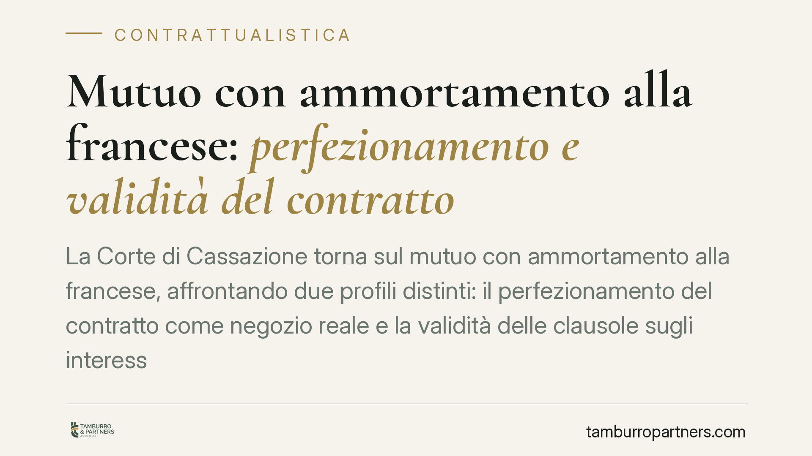

Mutuo con ammortamento alla francese: perfezionamento e validità del contratto
La Corte di Cassazione torna sul mutuo con ammortamento alla francese, affrontando due profili distinti: il perfezionamento del contratto come negozio reale e la validità delle clausole sugli interessi. La questione interessa chi ha stipulato un finanziamento a rata costante e si chiede se il piano di rimborso celi anatocismo o indeterminatezza dell'oggetto. Qui distinguiamo i profili davvero rilevanti da quelli infondati.

Il fatto
La pronuncia interviene su una controversia tipica: il mutuatario contesta la validità del piano di ammortamento alla francese, sostenendo che la capitalizzazione composta degli interessi produca anatocismo vietato e renda indeterminato l'oggetto del contratto.
È utile premettere una distinzione che orienta ogni valutazione: altro è la contestazione di sistema — l'ammortamento alla francese sarebbe nullo *in sé* —, altro è il vizio concreto di quel singolo contratto, per esempio una clausola di calcolo degli interessi oscura o divergente dal tasso pattuito. Sono due piani diversi, con conseguenze processuali e probatorie diverse.
Inquadramento normativo
Il mutuo è un contratto reale ai sensi dell'art. 1813 c.c.: si perfeziona con la consegna della somma, non con il semplice consenso. Questo dato incide sul momento in cui sorgono gli obblighi restitutori e sulla decorrenza degli interessi.
Sul versante degli interessi, il divieto di anatocismo è fissato dall'art. 1283 c.c., che consente il computo di interessi su interessi scaduti solo a condizioni rigorose. La determinatezza o determinabilità dell'oggetto è invece richiesta dagli artt. 1346 e 1418 c.c., a pena di nullità.
Il nodo affrontato dalla giurisprudenza di legittimità è preciso: nel mutuo a rata costante con capitalizzazione composta, la nullità deriva (a) da violazione del divieto di anatocismo o (b) da indeterminatezza dell'oggetto? La risposta consolidata — da ultimo ribadita dalle Sezioni Unite con sentenza n. 15130 del 29 maggio 2024 — è negativa su entrambi i fronti.
Perché l'ammortamento alla francese non è nullo di per sé
Nell'ammortamento alla francese la rata è costante e si compone di una quota capitale crescente e di una quota interessi decrescente. Gli interessi di ciascuna rata sono calcolati sul debito residuo del periodo precedente, già decurtato dal capitale rimborsato.
Non vi è quindi anatocismo ex art. 1283 c.c.: gli interessi non vengono calcolati su interessi scaduti e non pagati, ma sul capitale ancora da restituire. La maggiore incidenza degli interessi nelle prime rate è un effetto finanziario della struttura del piano, non una capitalizzazione di interessi su interessi.
Quanto alla determinatezza dell'oggetto, se il contratto indica importo mutuato, durata, tasso e numero delle rate, il piano è determinabile mediante un calcolo matematico univoco. L'eventuale mancata esplicitazione del regime di capitalizzazione (semplice o composto) non rende di per sé indeterminato l'oggetto, salvo che il contratto contenga dati tra loro incoerenti.
Validità e trasparenza: due piani da non confondere
Un errore ricorrente è trattare la validità del piano e la trasparenza bancaria come se fossero la stessa cosa. Non lo sono.
La validità attiene agli artt. 1346 e 1418 c.c. La trasparenza è invece disciplinata dagli artt. 116 e 117 del Testo Unico Bancario (D.Lgs. 385/1993), che impongono la pubblicità e la chiara indicazione delle condizioni economiche, incluso l'ISC/TAEG (Indicatore Sintetico di Costo). Una divergenza tra ISC dichiarato e costo effettivo può rilevare sul piano della trasparenza — con possibili rimedi ex art. 117 TUB — ma non comporta automaticamente la nullità del piano di ammortamento. Chi confonde i due piani sbaglia rimedio e onere della prova.
Implicazioni pratiche
Per il mutuatario, la contestazione "di sistema" dell'ammortamento alla francese ha scarse probabilità di successo alla luce dell'orientamento di legittimità. Ciò non esclude la rilevanza di vizi concreti: clausole di indicizzazione oscure, tassi effettivi divergenti da quelli pattuiti, difetti di trasparenza sull'ISC.
Per il mutuante, resta centrale la redazione di contratti con dati completi e coerenti e con corretta rappresentazione del costo complessivo.
Cosa fare in concreto
- Recuperate il contratto e il piano di ammortamento allegato e verificate la coerenza tra importo, tasso, durata e numero di rate.
- Distinguete la contestazione: un vizio concreto (clausola oscura, ISC divergente) è più difendibile di una contestazione astratta del metodo francese.
- Confrontate ISC/TAEG dichiarato ed effettivo: eventuali scostamenti vanno valutati sul piano della trasparenza ex artt. 116-117 TUB.
- Fate elaborare una perizia econometrica solo dopo aver individuato il profilo di contestazione, per evitare accertamenti generici e costosi.
- Valutate i termini: prescrizione e, per i rapporti già definiti, la spendibilità concreta dell'azione.
Disclaimer
Contributo informativo a cura di Tamburro & Partners - Avv. Giuseppe Tamburro. Non costituisce parere legale.
Ogni contratto ha il suo equilibrio.
Se vuoi una revisione delle clausole o una redazione su misura, scrivi allo studio. Ti rispondiamo entro un giorno lavorativo.